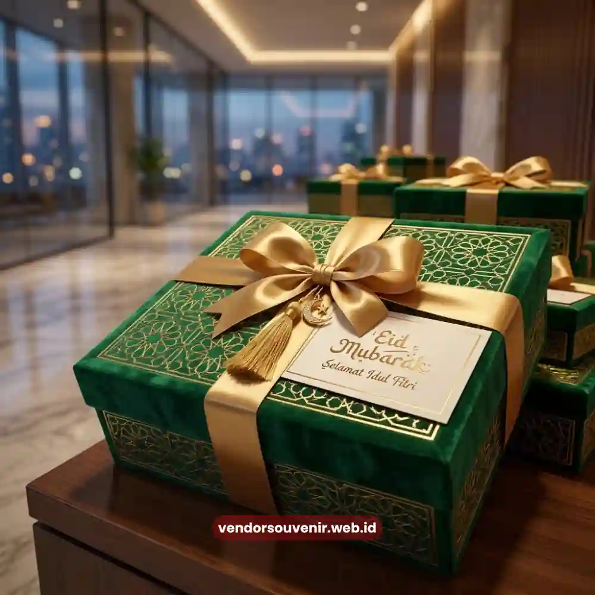

Daftar Isi
Hampers lebaran kantor adalah paket hadiah Idul Fitri yang disusun khusus untuk karyawan, klien, dan mitra bisnis dengan kemasan rapi serta isi yang dapat disesuaikan anggaran perusahaan.
Harga hampers lebaran kantor umumnya bervariasi tergantung isi, kemasan, dan jumlah pesanan. Semakin awal perusahaan memesan, semakin besar peluang mendapatkan harga terbaik dan pilihan desain terlengkap.
- Hampers lebaran kantor cocok untuk hadiah karyawan, klien, dan relasi bisnis sekaligus.
- Harga dapat ditekan melalui pemesanan grosir dan pemesanan lebih awal sebelum masa puncak Ramadan.
- Isi hampers dapat dikustomisasi mulai dari makanan kering, kurma, hingga produk lokal UMKM.
- Kemasan dapat diberi branding logo perusahaan untuk memperkuat citra korporat.
- Vendor Souvenir menyediakan katalog lengkap dengan berbagai rentang harga dan tema kemasan.
Apa Itu Hampers Lebaran Kantor?
Hampers lebaran kantor secara khusus dirancang berbeda dari parcel lebaran rumahan karena mempertimbangkan jumlah penerima yang besar, konsistensi kualitas antar paket, serta kebutuhan branding perusahaan. Konsep ini lahir dari kebutuhan divisi HR dan procurement yang harus menyiapkan hadiah untuk puluhan hingga ribuan karyawan dan klien dalam waktu bersamaan.
Berbeda dengan belanja parcel eceran, pemesanan hampers lebaran kantor biasanya melibatkan proses kurasi isi, negosiasi harga grosir, hingga penambahan elemen branding seperti kartu ucapan berlogo perusahaan. Perusahaan yang mengelola pengadaan hadiah Lebaran secara terstruktur umumnya lebih mudah menjaga konsistensi kualitas dan mempercepat proses distribusi ke seluruh cabang atau divisi.
Tren belanja korporat menjelang Ramadan di Indonesia menunjukkan pola permintaan yang meningkat tajam pada rentang dua hingga tiga minggu sebelum Lebaran. Pola musiman ini membuat pemesanan awal menjadi strategi yang umum digunakan oleh tim procurement berpengalaman agar tidak menghadapi keterbatasan stok dan pilihan desain kemasan.
Mengapa Perusahaan Membutuhkan Hampers Lebaran Kantor?
Hampers lebaran kantor menjadi kebutuhan karena Idul Fitri merupakan momentum penting untuk mempererat hubungan internal maupun eksternal perusahaan. Pemberian hadiah pada momen ini bukan sekadar formalitas tahunan, melainkan bagian dari strategi employee engagement dan relationship management dengan klien.
Apakah Hampers Lebaran Wajib Diberikan Perusahaan?
Pemberian hampers lebaran bukan kewajiban hukum, namun telah menjadi praktik umum di banyak perusahaan sebagai bentuk apresiasi tahunan. Banyak perusahaan menjadikan hampers sebagai bagian dari kebijakan kesejahteraan karyawan dan strategi menjaga loyalitas mitra bisnis.
Beberapa alasan utama perusahaan tetap mengalokasikan anggaran untuk hampers lebaran kantor antara lain:
- Menjaga hubungan baik dengan klien dan mitra strategis menjelang tahun fiskal berikutnya.
- Meningkatkan motivasi dan rasa dihargai di kalangan karyawan.
- Memperkuat citra perusahaan melalui kemasan hadiah yang profesional dan konsisten.
- Menjadi media promosi halus melalui logo dan warna korporat pada kemasan.

Box Hampers Lebaran Karyawan Perusahaan yang Elegan
Bagaimana Cara Memilih Hampers Lebaran Kantor yang Tepat?
Memilih hampers lebaran kantor yang tepat memerlukan pertimbangan anggaran, jumlah penerima, dan tujuan pemberian hadiah, baik untuk internal karyawan maupun eksternal klien. Kombinasi ketiga faktor ini menentukan jenis isi dan kemasan yang paling sesuai.
Apa Faktor yang Mempengaruhi Harga Hampers Lebaran Kantor?
Harga hampers lebaran kantor dipengaruhi oleh jenis isi produk, jumlah pesanan, tingkat kustomisasi kemasan, dan waktu pemesanan terhadap musim puncak Ramadan. Berikut rincian faktor yang paling menentukan besaran biaya:
- Jenis dan kualitas isi produk. Kombinasi makanan kering premium, kurma pilihan, atau produk UMKM lokal akan memengaruhi harga per paket dibanding isi standar seperti biskuit dan sirup umum.
- Volume pemesanan. Pemesanan dalam jumlah besar biasanya mendapatkan harga per unit yang lebih efisien dibanding pembelian satuan, karena biaya produksi kemasan dan pengemasan dapat dibagi lebih optimal.
- Tingkat kustomisasi. Penambahan logo perusahaan, kartu ucapan personal, atau desain kemasan eksklusif akan menambah biaya produksi dibanding kemasan standar yang sudah tersedia di katalog.
- Waktu pemesanan. Memesan pada periode low season, yaitu jauh sebelum mendekati Lebaran, umumnya memberikan fleksibilitas harga yang lebih baik dibanding pemesanan mendadak saat permintaan pasar sedang tinggi.
Berapa Kisaran Anggaran Ideal untuk Hampers Lebaran Kantor?
Anggaran ideal untuk hampers lebaran kantor sebaiknya disesuaikan dengan segmentasi penerima, misalnya anggaran berbeda untuk karyawan level staf, manajerial, dan klien prioritas. Banyak perusahaan menerapkan sistem tiering anggaran agar pengeluaran tetap terkendali namun kualitas hadiah tetap layak dan merata.
Segmentasi ini juga membantu tim procurement menyusun rencana pembelian secara bertahap, dimulai dari kategori hampers reguler untuk karyawan hingga kategori premium untuk relasi bisnis utama.
Apa Saja Isi Hampers Lebaran Kantor yang Populer?
Isi hampers lebaran kantor yang populer umumnya mengombinasikan makanan kering tahan lama, produk minuman kemasan, dan sentuhan personal seperti kartu ucapan bertema Ramadan. Kombinasi ini dipilih karena praktis didistribusikan dalam jumlah besar dan memiliki daya tahan yang cukup panjang.
Selain kombinasi klasik tersebut, banyak perusahaan mulai melirik variasi isi yang lebih segar dan relevan dengan preferensi karyawan masa kini, mulai dari produk kesehatan ringan hingga barang fungsional bertema kerja.
Bagaimana Proses Pemesanan Hampers Lebaran Kantor dalam Jumlah Besar?
Proses pemesanan hampers lebaran kantor dalam jumlah besar biasanya dimulai dari konsultasi kebutuhan, penentuan anggaran per paket, kurasi isi, hingga proses produksi dan distribusi ke lokasi tujuan. Tahapan yang terstruktur ini penting agar kualitas tetap konsisten meskipun jumlah pesanan mencapai ratusan hingga ribuan paket.
Perusahaan yang ingin menambahkan identitas visual pada kemasan biasanya perlu menyiapkan file logo dan tema warna korporat sejak tahap awal konsultasi, agar proses produksi kemasan custom dapat berjalan tanpa hambatan waktu.
Selain aspek isi dan branding, perencanaan anggaran yang matang juga menjadi kunci agar pengadaan hampers berjalan efisien tanpa membebani cash flow perusahaan menjelang akhir kuartal.

Solusi Hampers dari Vendor Terpercaya
Apa Kesalahan Umum Perusahaan Saat Memesan Hampers Lebaran Kantor?
Kesalahan umum yang sering terjadi meliputi pemesanan mendadak mendekati Lebaran, tidak menentukan segmentasi penerima, dan mengabaikan kualitas kemasan saat proses distribusi jarak jauh. Ketiga kesalahan ini dapat berdampak pada keterlambatan pengiriman, ketimpangan kualitas hadiah, hingga kerusakan produk selama pengiriman.
Pemesanan yang dilakukan terlalu dekat dengan hari raya sering kali membuat perusahaan kehilangan akses ke pilihan kemasan premium karena stok telah lebih dulu dipesan oleh perusahaan lain. Selain itu, tanpa segmentasi anggaran yang jelas, tim procurement berisiko mengalokasikan dana secara tidak proporsional antara hadiah karyawan dan klien.
Hampers lebaran kantor merupakan investasi tahunan yang berdampak langsung pada hubungan internal dan eksternal perusahaan. Memilih vendor yang menyediakan katalog lengkap, harga transparan, dan opsi kustomisasi logo akan memudahkan proses pengadaan tanpa mengorbankan kualitas maupun anggaran.
Butuh Bantuan Merancang Hampers Lebaran Kantor?
Tim ahli kami siap membantu Anda menyusun paket hadiah eksklusif yang menarik.
Pilihan barang akan disesuaikan dengan ketersediaan budget dan kebutuhan Anda.
Seluruh desain kemasan akan kami selaraskan dengan identitas visual perusahaan Anda.
Dapatkan penawaran harga terbaik untuk pesanan massal!
FAQ Seputar Hampers Lebaran Kantor
Apakah hampers lebaran kantor bisa dipesan dengan logo perusahaan?
Ya, sebagian besar vendor menyediakan opsi custom logo pada kemasan maupun kartu ucapan sebagai bagian dari layanan korporat.
Berapa minimal jumlah pemesanan untuk mendapatkan harga grosir?
Minimal pemesanan grosir bervariasi antar vendor, namun umumnya semakin besar jumlah paket, semakin kompetitif harga per unitnya.
Kapan waktu terbaik memesan hampers lebaran kantor?
Waktu terbaik adalah beberapa minggu sebelum bulan Ramadan dimulai, agar perusahaan memiliki lebih banyak pilihan desain dan waktu produksi yang cukup.
Apakah isi hampers lebaran kantor bisa disesuaikan dengan anggaran tertentu?
Bisa, vendor biasanya menyediakan beberapa tingkatan paket sesuai anggaran, mulai dari paket reguler hingga paket premium untuk klien prioritas.
Apakah pengiriman hampers lebaran kantor bisa dilakukan ke banyak alamat sekaligus?
Bisa, layanan pengiriman korporat umumnya mendukung distribusi ke banyak alamat cabang atau rumah karyawan sesuai data yang disiapkan perusahaan.
Maroon Souvenir
Partner Corporate Gift terpercaya di Indonesia. Berpengalaman melayani ratusan perusahaan sejak 2018.
Lihat Portofolio Kami